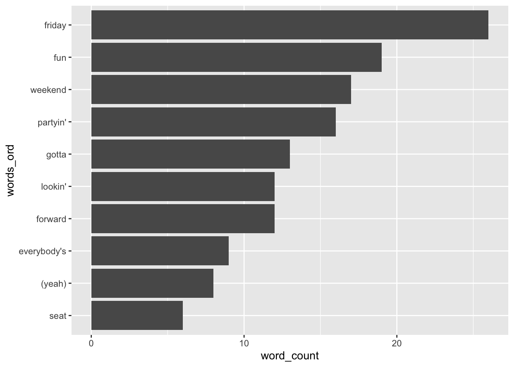

Chapter 13 Strings with stringr
Incomplete Chapter (Section 13.2).
Goals:
- use functions in the
stringrpackage to analyze text data. - introduce some of the issues with manipulating strings that don’t pertain to numeric or factor data.
13.1 Friday, Friday
The string below has lyrics to Rebecca Black’s critically reviewed song Friday: https://www.youtube.com/watch?v=kfVsfOSbJY0. In particular, we will answer the following questions:
- how many times does Rebecca Black say the word “Friday” in her song?
- how many times does she say any word involving “day” in her song?
- what are the most popular words in the song?
These questions may seem simple, but they can actually still be somewhat challenging to answer. Issues like punctuation, filler words, and parsing the long string will give us some challenges to work through.
library(tidyverse)
library(stringr)
rblack <- c("Oo-ooh-ooh, hoo yeah, yeah (Yeah, ah-ah-ah-ah-ah-ark)
Yeah, yeah
Yeah-ah-ah, yeah-ah-ah
Yeah-ah-ah
Yeah, yeah, yeah
Seven a.m., waking up in the morning
Gotta be fresh, gotta go downstairs
Gotta have my bowl, gotta have cereal
Seein' everything, the time is goin'
Tickin' on and on, everybody's rushin'
Gotta get down to the bus stop
Gotta catch my bus, I see my friends (my friends)
Kickin' in the front seat
Sittin' in the back seat
Gotta make my mind up
Which seat can I take?
It's Friday, Friday
Gotta get down on Friday
Everybody's lookin' forward to the weekend, weekend
Friday, Friday
Gettin' down on Friday
Everybody's lookin' forward to the weekend
Partyin', partyin' (yeah)
Partyin', partyin' (yeah)
Fun, fun, fun, fun
Lookin' forward to the weekend
Seven, forty five, we're drivin' on the highway
Cruisin' so fast, I want time to fly
Fun, fun, think about fun
You know what it is
I got this, you got this
My friend is by my right, aye
I got this, you got this
Now you know it
Kickin' in the front seat
Sittin' in the back seat
Gotta make my mind up
Which seat can I take?
It's Friday, Friday
Gotta get down on Friday
Everybody's lookin' forward to the weekend, weekend
Friday, Friday
Gettin' down on Friday
Everybody's lookin' forward to the weekend
Partyin', partyin' (yeah)
Partyin', partyin' (yeah)
Fun, fun, fun, fun
Lookin' forward to the weekend
Yesterday was Thursday, Thursday
Today it is Friday, Friday (partyin')
We-we-we so excited
We so excited
We gonna have a ball today
Tomorrow is Saturday
And Sunday comes afterwards
I don't want this weekend to end
It's Friday, Friday
Gotta get down on Friday
Everybody's lookin' forward to the weekend, weekend (we gotta get down)
Friday, Friday
Gettin' down on Friday
Everybody's lookin' forward to the weekend
Partyin', partyin' (yeah)
Partyin', partyin' (yeah)
Fun, fun, fun, fun
Lookin' forward to the weekend
It's Friday, Friday
Gotta get down on Friday
Everybody's lookin' forward to the weekend, weekend
Friday, Friday
Gettin' down on Friday
Everybody's lookin' forward to the weekend
Partyin', partyin' (yeah)
Partyin', partyin' (yeah)
Fun, fun, fun, fun
Lookin' forward to the weekend")Our first goal is to parse out every word so that we have an object. Run the following to examine the rblack object. The \n denotes a line break in the string.
rblackOur first step will be to use the \n as a separator and split the lyric strings by that character using the str_split() function. str_split() takes a string as its first argument and what we want to split the string by (\n in this case) as its second argument. simplify = TRUE puts the results into a matrix instead of a list.
rblack2 <- str_split(rblack, "\n", simplify = TRUE)
rblack2That’s much better to look at! Look at the structure of rblack2 with:
str(rblack2)We see that rblack2 is a matrix with 1 row and 76 colmns. But, we now want each word to be its own separate string. We can do this by using str_split() again, but, this time getting rid of the spaces.
rblack3 <- str_split(rblack2, c(" "))
rblack3Look carefully between rblack2 and rblack3: what’s the difference? In rblack2, there’s quotes surrounding each line while in rblack3, there’s quotes surrounding each word.
We can use the unlist() function to convert the list into a regular vector:
rblack4 <- unlist(rblack3)
rblack4What would happen if we tried to count the number of times Rebecca Black says Friday from the words below? Let’s try and see!
rblack_df <- tibble(words = rblack4)
rblack_df %>% group_by(words) %>%
summarise(word_count = n()) %>%
arrange(desc(word_count))## # A tibble: 126 x 2
## words word_count
## <chr> <int>
## 1 the 20
## 2 Friday 17
## 3 to 15
## 4 weekend 13
## 5 forward 12
## 6 Gotta 10
## 7 on 10
## 8 down 9
## 9 Friday, 9
## 10 fun, 9
## # … with 116 more rowsThe issue with this approach is that there are some instances of Friday with a , and some without. Based on this issue, let’s go back to our vector of words rblack4 and see if we can fix it using str_remove(), which removes given patterns in a string. For example,
rblack5 <- str_remove(rblack4, pattern = c(","))
rblack5removes all of the commas.
Another issue is that, if a word starts a sentence, it’s capitalized so R thinks Partyin' is a completely different word than partyin'. The str_to_lower() function converts all characters to lowercase:
rblack6 <- str_to_lower(rblack5)
rblack6Finally, we might want to get rid of “non-interesting” words, commonly known as “stop words.” These are words like “the,” “on,” “a,” “I,” etc. that don’t really provide meaning about the song. The tidytext package has a data set that has a list of stop words prepackaged. Install the package, load the tidytext library, and examine the stop words with:
##install.packages("tidytext")
library(tidytext)
stop_wordsNext, let’s make the Friday words into a tibble with the tibble() function:
rblack_df <- tibble(words = rblack6)
rblack_df## # A tibble: 360 x 1
## words
## <chr>
## 1 oo-ooh-ooh
## 2 hoo
## 3 yeah
## 4 yeah
## 5 (yeah
## 6 ah-ah-ah-ah-ah-ark)
## 7 yeah
## 8 yeah
## 9 yeah-ah-ah
## 10 yeah-ah-ah
## # … with 350 more rowsAnd we can now use the anti_join() function to get rid of the stop words in the Rebecca Black data set.
rblack_small <- anti_join(rblack_df, stop_words,
by = c("words" = "word"))
rblack_small## # A tibble: 208 x 1
## words
## <chr>
## 1 oo-ooh-ooh
## 2 hoo
## 3 yeah
## 4 yeah
## 5 (yeah
## 6 ah-ah-ah-ah-ah-ark)
## 7 yeah
## 8 yeah
## 9 yeah-ah-ah
## 10 yeah-ah-ah
## # … with 198 more rowsWe see that 98 words were dropped from the data set, but that some words weren’t picked up (like yeah-ah-ah). We will leave these for now, but, we could remove them with filter(words != "yeah-ah-ah") Finally, we can get some counts of words in the song Friday that aren’t “stop words.”
rblack_small %>% group_by(words) %>%
summarise(word_count = n()) %>%
arrange(desc(word_count))## # A tibble: 60 x 2
## words word_count
## <chr> <int>
## 1 friday 26
## 2 fun 19
## 3 weekend 17
## 4 partyin' 16
## 5 gotta 13
## 6 forward 12
## 7 lookin' 12
## 8 everybody's 9
## 9 (yeah) 8
## 10 yeah 7
## # … with 50 more rows13.1.1 Exercises
Exercises marked with an * indicate that the exercise has a solution at the end of the chapter at 13.4.
* Look at the remaining words. Do any of them look like stop words that were missed with the stop words from the
tidytextpackage? Create a tibble with a couple of stop words not picked up by thetidytextpackage, and use a join function to drop these words fromrblack_small.* Ignore the parentheses for now. Make a point plot that shows the 10 most common words in Rebecca Black’s Friday, where the words are ordered from the most common to the least common on your graph.
We can also make a wordcloud (though word clouds have some issues).
Rhas a wordcloud package calledwordcloud. Run the following code to make a word cloud of the words in the song Friday.
rblack_sum <- rblack_small %>% group_by(words) %>%
summarise(word_count = n()) %>%
arrange(desc(word_count))
## install.packages("wordcloud")
library(wordcloud)
wordcloud(rblack_sum$words, rblack_sum$word_count,
colors = brewer.pal(8, "Dark2"), scale = c(5, .2),
random.order = FALSE, random.color = FALSE)Then, type ?wordcloud to explore some of the options. In particular, try to increase the number of words plotted in the cloud.
- Finally, what about those pesky parentheses? Certain characters in
Rare treated as special:$,(,., and)are all examples. Dealing with these are fairly annoying: we need to “escape” them with a backslash and then “escape” that backslash with another backslash. If that’s confusing, no worries: we won’t focus too much on these special characters in this class.
To remove the front parenthesis, use
rblack7 <- str_remove(rblack6, pattern = c("\\("))
rblack7and then to remove the back parenthesis, use
rblack8 <- str_remove(rblack7, pattern = c("\\)"))
rblack8These are “regular expressions:” if interested, you can read more in the R4DS textbook.
We analyzed a short text data set, but, you can imagine extending this type of analysis to things like:
- song lyrics, if you have the lyrics to all of the songs from an artist https://rpubs.com/RosieB/taylorswiftlyricanalysis
- book analysis, if you have the text of an entire book or series of books
- tv analysis, if you have the scripts to all episodes of a tv show
If you were doing one of these analyses, there are lots of cool functions in tidytext to help you out!
13.2 Add Second Example Here
maybe the office package? maybe the friends package?
13.3 Chapter Exercises
Exercises marked with an * indicate that the exercise has a solution at the end of the chapter at 13.4.
- * Read in the
beyonce_lyrics.csvfile, which has the lyrics to all of beyonce’s songs and construct either a word cloud or a point plot that shows the most common non-stop words in either all of Beyonce’s songs. Do the best you can here (you might have some minor errors, like the parentheses in Friday’s “yeah” that we don’t have the tools to fix).
Hint: You can actually skip a couple of the steps from the Friday analysis, as, for example, there is no “\n” character to remove in Beyonce’s lyrics.
beyonce <- read_csv("data/beyonce_lyrics.csv")
beyonce_lyrics <- beyonce$line13.4 Exercise Solutions
13.4.1 Friday, Friday S
- * Look at the remaining words. Do any of them look like stop words that were missed with the stop words from the
tidytextpackage? Create a tibble with a couple of stop words not picked up by thetidytextpackage, and use a join function to drop these words fromrblack_small.
extra_stops <- tibble(other_stop_words = c("gonna", "yeah"))
rblack_small2 <- anti_join(rblack_small, extra_stops, by = c("words" = "other_stop_words"))
rblack_wordcounts <- rblack_small2 %>% group_by(words) %>%
summarise(word_count = n()) %>%
arrange(desc(word_count))
rblack10 <- rblack_wordcounts %>% slice(1:10)- * Ignore the parentheses for now. Make a point plot that shows the 10 most common words in Rebecca Black’s Friday, where the words are ordered from the most common to the least common on your graph.
rblack10 <- rblack10 %>% mutate(words_ord = fct_reorder(words, .x = word_count))
ggplot(data = rblack10, aes(x = words_ord, y = word_count)) +
geom_col() +
coord_flip()
13.4.2 Second Example S
13.4.3 Chapter Exercises S
- * Read in the
beyonce_lyrics.csvfile, which has the lyrics to all of beyonce’s songs and construct either a word cloud or a point plot that shows the most common non-stop words in either all of Beyonce’s songs. Do the best you can here (you might have some minor errors, like the parentheses in Friday’s “yeah” that we don’t have the tools to fix).
Hint: You can actually skip a couple of the steps from the Friday analysis, as, for example, there is no “\n” character to remove in Beyonce’s lyrics.
beyonce <- read_csv("data/beyonce_lyrics.csv")
beyonce_lyrics <- beyonce$linebeyonce_lines <- str_split(beyonce$line, c(" "))
words_only <- unlist(beyonce_lines)
beyonce_lines2 <- str_remove(words_only, pattern = c(","))
beyonce_lines2
beyonce_lines3 <- str_remove(beyonce_lines2, pattern = c(";"))
beyonce_lines3
beyonce_lines4 <- str_to_lower(beyonce_lines3)
beyonce_lines4
beyonce_df <- tibble(b_words = beyonce_lines4)beyonce_small <- anti_join(beyonce_df, stop_words, by = c("b_words" = "word"))
beyonce_small
beyonce_sum <- beyonce_small %>% group_by(b_words) %>%
summarise(word_count = n()) %>%
arrange(desc(word_count)) %>%
filter(word_count > 100)
library(wordcloud)
wordcloud(beyonce_sum$b_words, beyonce_sum$word_count,
colors = brewer.pal(8, "Dark2"), scale = c(5, .2),
random.order = FALSE, random.color = FALSE)
beyonce_bigwords <- beyonce_sum %>% filter(word_count > 250) %>%
mutate(b_words = fct_reorder(b_words, .x = word_count))
ggplot(data = beyonce_bigwords, aes(x = word_count, y = b_words)) +
geom_col()
## there's still some stopwords in there (yeah, ya, wanna, 'cause)
## but these can be removed with dplyr.